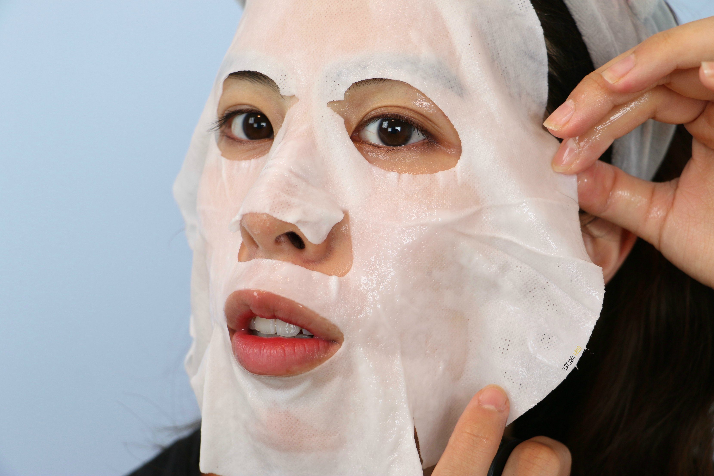
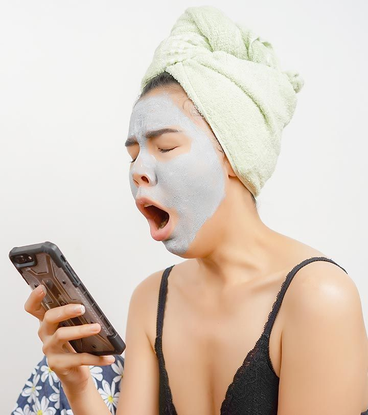
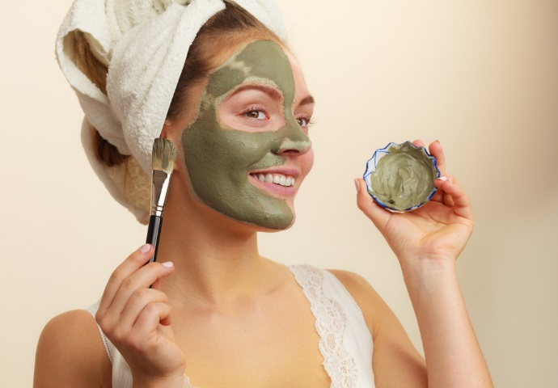

Sheet masks:
“These are primarily hydrating. Having ingredients saturated on the skin in this occlusive manner keeps air from getting in and you’ll get a higher absorption in a short amount of time. It is recommended to keep these in the fridge to get an anti-inflammatory benefit as well.”

Sleeping packs or overnight masks:
“Overnight masks or sleeping packs will have a thicker texture and help trap in whatever ingredients you layer underneath. They’re ideal for mature skin or severely dry skin.”

Clay or mud masks:
"These absorb oil and can have a mild exfoliating effect — so they’re great for oily areas. You don’t have to put it on your whole face, though. You can target just a few areas. In fact, I love multi-masking: using a clay on the t-zone and a hydrating one everywhere else.”

Insider tip: Apply masks after serum but before moisturizer, unless it’s a leave-on overnight mask, which can take the place of your nighttime moisturizer. Like any product that supplements your regular routine, masks should be used in moderation — no more than once a week to prevent any irritation, Dr. Zeichner says.
Which face mask is best for your skintype?| Face masks | Skin types |
|---|---|
| Clay | Best for oily, acne-prone and combination skin |
| Mud | Best for all skin types |
| Sheet | Best for all skin types |
| Bubble | Best for dry skin |
| Charcoal | Best for oily and acne-prone skin |
| Peel off | Best for normal skin |
| Creme | Best for all skin types but particularly dry skin |